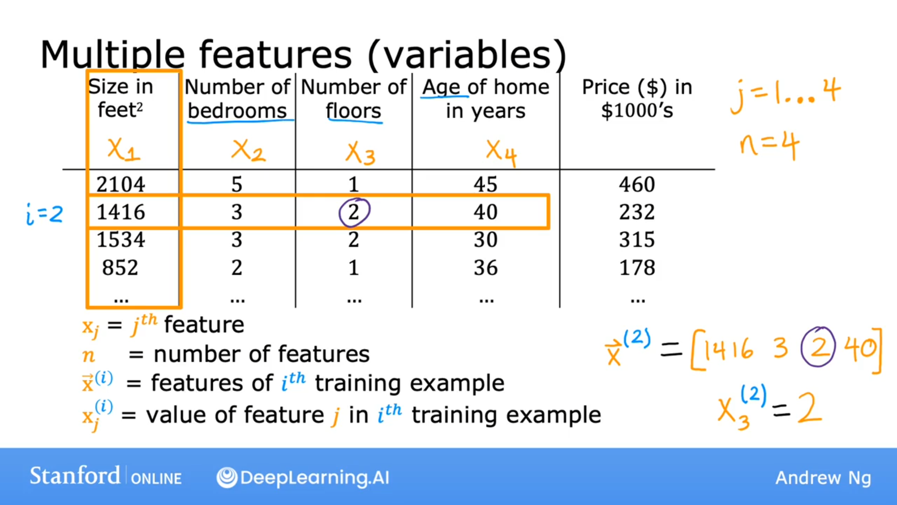
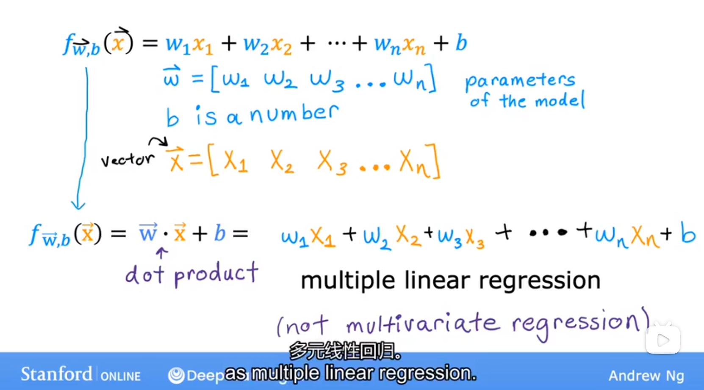
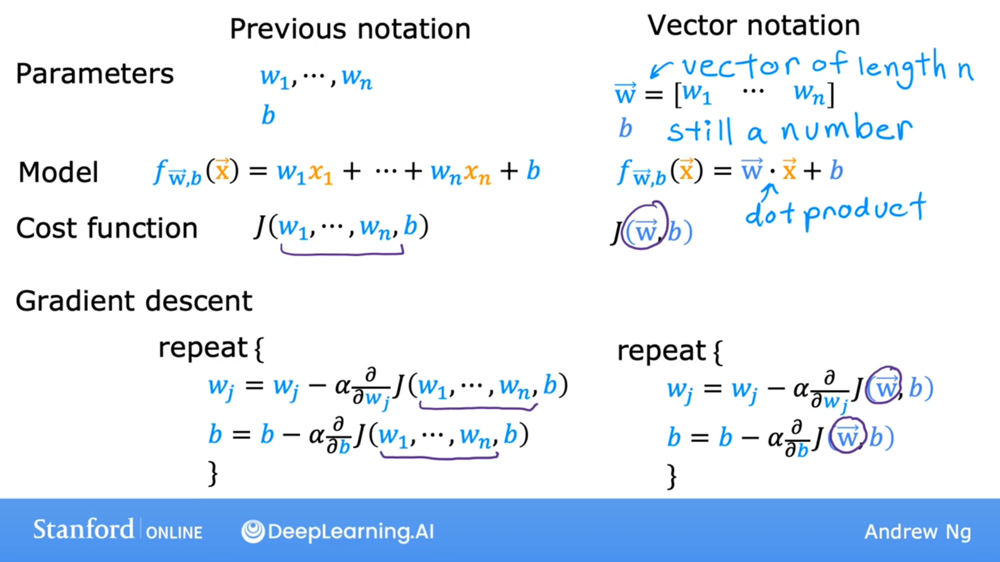
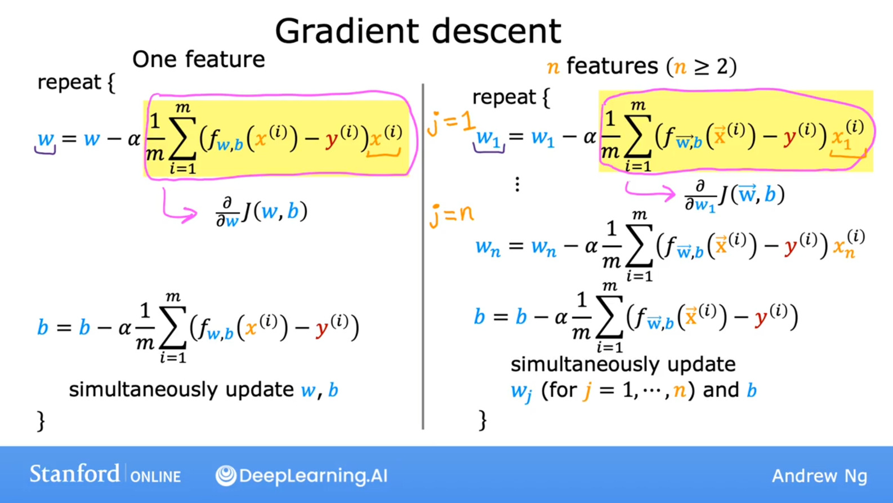
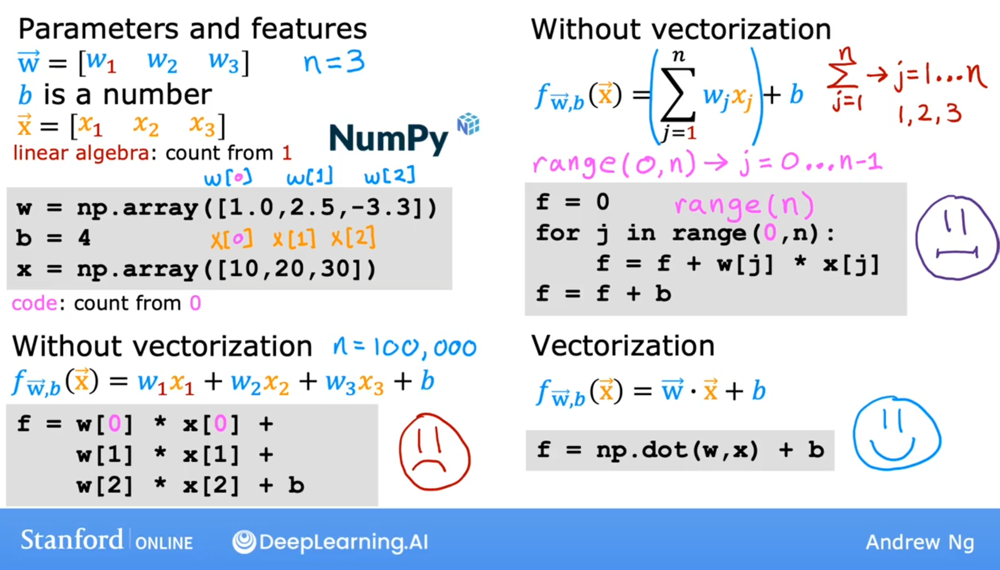
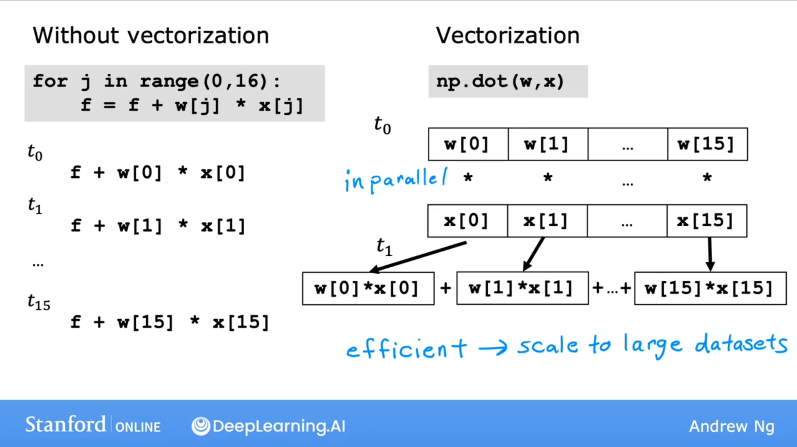
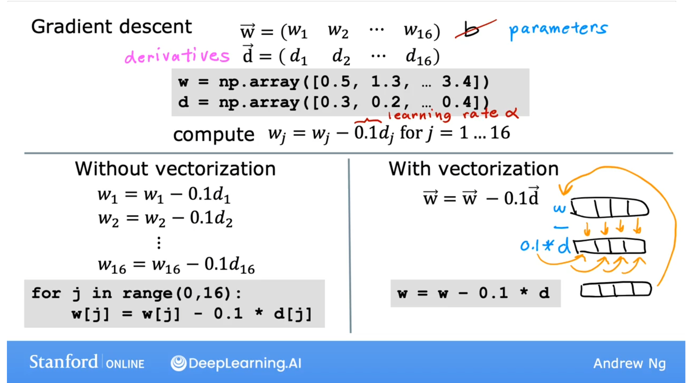
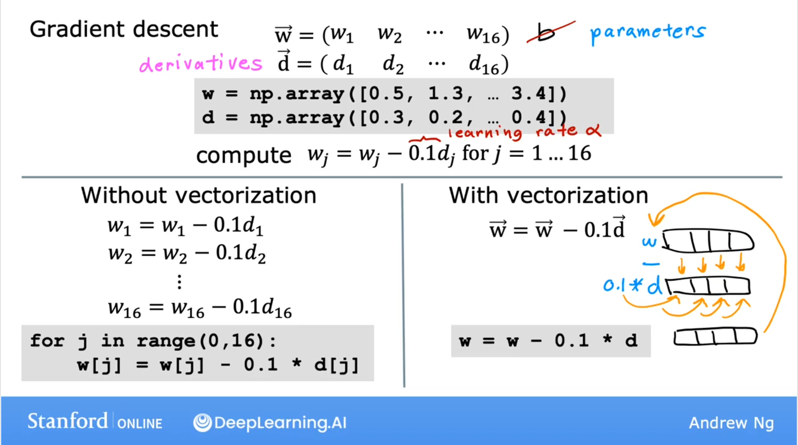

BP神经网络原理及其python实现（基于tensorflow）(正在编写中，未完待续)
前言
本文正在编写中……
BP神经网络原理及其python实现（基于tensorflow）
Artificial Neural Networks，ANN
参考：
- 《人工智能》
- 《机器学习 西瓜书》南京大学 周志华
- 《神经网络与深度学习》复旦大学 邱锡鹏
- 斯坦福CS231，Andrew NG
机器学习算法：有监督学习、无监督学习。
分类classification/class/category :
回归regression:predict a number from infinitely many possible numbers
单变量线性回归模型
模型 :
平方误差损失函数:
参数 :
目标 : 最小化损失函数
梯度下降计算公式 :$ (\alpha ：学习率)$
由平方误差公式推导迭代公式(将上述公式分别代入求导即可)，得：
批梯度下降法：每次梯度下降都使用了所有训练数据
多元线性回归模型
The model’s prediction with multiple variables is given by the linear model:
or in vector notation:
where $\cdot$ is a vector dot product
The equation for the cost function with multiple variables $J(\mathbf{w},b)$ is:
where:
Gradient descent for multiple variables:
where, n is the number of features, parameters $w_j$, $b$, are updated simultaneously and where
- m is the number of training examples in the data set
- $f_{\mathbf{w},b}(\mathbf{x}^{(i)})$ is the model’s prediction, while $y^{(i)}$ is the target value


多元线性回归的梯度下降

梯度下降法是受推荐的求最优w、b的方法

多元特征的向量化




神经网络模型
单层神经网络
多层神经网络
多分类模型（基于tensorflow）
In this lab, you will explore an example of multi-class classification using neural networks.
Python实现（基于tensorflow）
神经网络多分类程序示例：
前提：已预处理完毕，有train_x,train_y
import pandas as pd |
# 前提：已预处理完毕，有train_x,train_y |
看一下history里面存储了什么print(his.history.keys())
acc = his.history['accuracy'] |
关键函数详解
tf.keras.models.Sequential() 顺序模型（Sequential model）
tensorflow中tf.keras.models.Sequential()用法
tf.keras.models.compile()
history=model.fit()
http://t.csdnimg.cn/2HCvm
http://t.csdnimg.cn/jDJHp